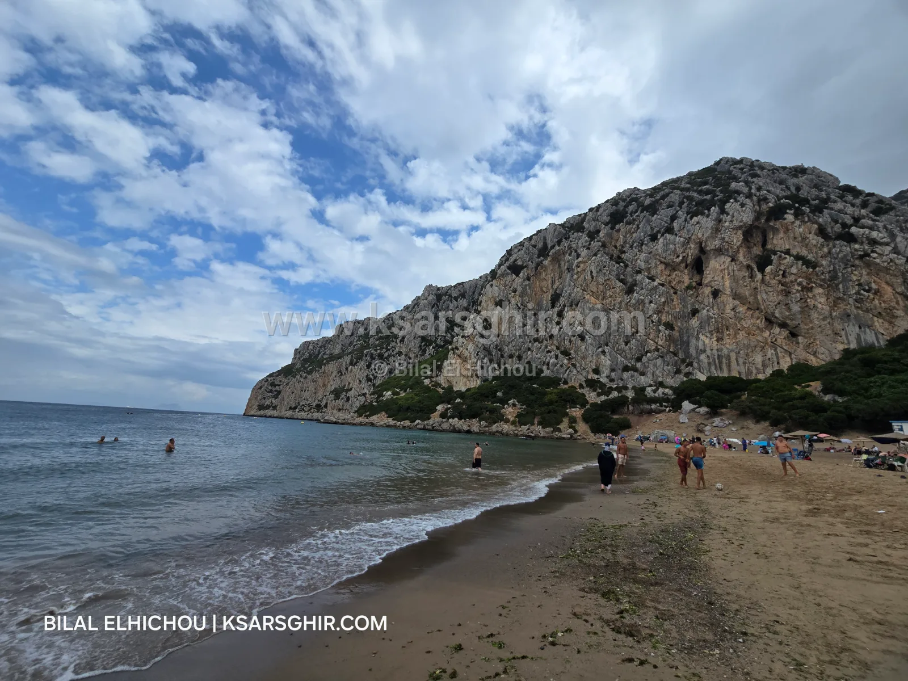

Les 3 meilleures plages calmes pour les familles à Ksar Sghir
Les 3 meilleures plages calmes pour les familles autour de Ksar Sghir : Oued Marsa, Dahdaha et Zrara. Plages familiales loin de la foule, services, accès et conseils.

⚡ En bref
Oued Marsa : calme et familiale, avec restaurants, commerces et kiosques saisonniers.
Dahdaha : crique familiale entre les montagnes, loin de la foule.
Zrara 1 et 2 : deux criques familiales entre les montagnes, calme total.
Nous pensons ici aux familles qui recherchent le calme et l’intimité : des plages peu fréquentées, une ambiance familiale et respectueuse, loin de l’affluence des grandes plages en août. Cette sélection repose sur l’expérience d’un habitant de la région, et toutes ces plages sont surveillées par la Protection civile de juin à septembre.
🏖️ Les trois plages
1. Plage d’Oued Marsa
⭐ La plus complète : calme familial et services
👨👩👧 Très familiale
🍽️ Restaurants et commerces
🏪 Kiosques saisonniers
🌊 Courants faibles
⛵ Barques de pêche
📶 Réseau faible
À environ 12 km de Ksar Sghir et à 2 km de la route principale, ce qui préserve son calme. Plage très familiale, avec restaurants, cafés et commerces en plus des kiosques saisonniers : pas besoin d’aller loin. Plage de galets, barques de pêche traditionnelle, courants faibles. Elle relève de la commune de Taghramt.
Crique de sable calme à environ 15 km à l’ouest de Ksar Sghir, entourée de montagnes, loin de la foule et de l’animation du centre. Kiosques saisonniers l’été ; restaurants et commerces au centre de Ksar Sghir : emportez repas et eau pour une journée tranquille.
Deux criques voisines à environ 20 km à l’ouest de Ksar Sghir, entre montagne et mer. Deux criques, c’est un choix de plus : si l’une se remplit, le calme est dans l’autre. Kiosques saisonniers ; restaurants et commerces au centre de Ksar Sghir, alors emportez ce qu’il vous faut.